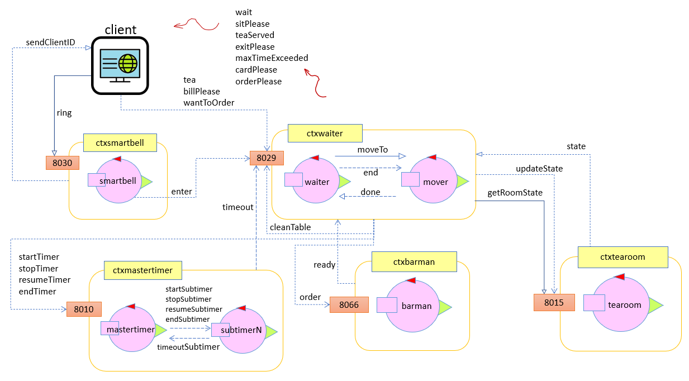

Requirements
Assumptions for Sprint 2
The assumptios made for the second sprint can be found here: Assumptions Sprint 2
Project
Structure
Logical Architecture
Hereunder is reported the logical architecture as described in the Problem Analysis.
 The main changes concern the context of the mastertimer: it has now been made explicit that the timer function is implemented by means of two different components. On one hand we have the Mastertimer which communicates directly with the waiter and receives all his requests, regardless of which table you want to use the timer for. On the other hand we have the Subtimers, actors that are in charge of keeping track of the time for a specific teatable.
The advantages of this type of solution, as already mentioned in Problem analysis (Sprint 2 analysis), are many:
- Having a timer per table (Subtimer) instead of a single timer that manages all the tables (old Timer) means having to deal with components that are simpler (and so easier to implement) and also more precise in their counting as they have no other tasks to perform besides counting
- Having a Mastertimer that redirects messages to the right Subtimer instead of letting the Waiter communicate directly with the multiple subtimers means hiding the implementation of the timer from the Waiter and thus making it more independent from it
-
Manager architecture
Hereunder are shown the manager and all the components that it is going to observe and interact with. The interaction with QAK actors is done thorugh CoAP, while the updating of the web-page is done thorugh web sockets. In particular, when the manager access its webGUI, the manager web server will start observing the CoAP resources as Waiter, Barman and Tearoom (so teatables) and, at any change of their states, the web page will be updated through web sockets.
-
Waiter architecture
The Waiter architecture has not changed compared to what was defined in the Sprint 1 project document.
Interaction
The interaction between actors is still realized as specified in the Sprint 1 document. We also have a new type of interaction, namely the one between Manager and actors. This type of interaction was implemented with the CoAP protocol and in particular we used the APIs provided by the Californium framework.
More detailed information can be found in: Introduction to CoAP - QAkctor as CoAP resources - Eclipse Califormium Website
- Interactions between components through CoAP are based on the request-response pattern, where a client sends a request to a server and gets back a response
- the CoapResource provided by Californium is a basic implementation of a CoAP resource. Each resource is allowed to define its own executor. When a request arrives, it will be handled by that executor.
- CoapResource supports CoAP’s observe mechanism. Enable a CoapResource to be observable by a CoAP client by marking it as observable with setObservable(boolean). Notify all CoAP observers by calling the method changed (), that reprocesses the request from observing clients. A CoAP observe relation between the resource and a CoAP client is represented by an instance of ObserveRelation.
- The method changed () notifies all CoAP clients that have established an observe relation with the CoapResource that the state has changed by reprocessing their originalrequest that has established the ObserveRelation.
Behaviour
As for what concernes the QAK modeling, most of the actors were unaltered from the problem analysis. Only the Mastertimer actor and the Subtimer actors have undergone some changes (code reported below in their respective paragraphs).
The source code for all QAK actor can by viewed at: Waiter, mastertimer and mover - Tearoom, smartbell and barman .
Mastertimer QAK behaviour
System mastertimermqttBroker "localhost" : 1883eventTopic "unibo/timer"// Interaction Waiter - Timer =======================================// Dispatch startTimer : startTimer(TEATABLE_ID, MAX_TIME)Dispatch stopTimer : stopTimer(TEATABLE_ID)Dispatch resumeTimer : resumeTimer(TEATABLE_ID)Dispatch endTimer : endTimer(TEATABLE_ID)Event timeout : timeout(TEATABLE_ID)//===================================================================// // Interaction MasterTimer - SubTimers ===============================// Dispatch startSubtimer : startSubtimer(MAX_TIME)Dispatch stopSubtimer : stopSubtimerARG)Dispatch resumeSubtimer : resumeSubtimer(ARG)Dispatch endSubtimer : endSubtimer(ARG)Dispatch timeoutSubtimer : timeoutSubtimer(TEATABLE_ID)//====================================================================// Below is reported the QAK model of the Mastertimer. Compared to what was defined in the Problem Analysis, the main change concerns its interaction with the Subtimers. In particular, to avoid having to replicate N times the code of a Subtimer, if N is the number of teatable, inside a QAK model, it was decided to create a generic Subtimer class that represents the behavior of a generic subtimer. The Mastertimer, therefore, according to its own internal policy decides when it is necessary to create a new subtimer (currently the policy is to create one subtimer per table immediately upon startup, but does not mean that more dynamic policies can be adopted in the future) and can communicate with them through the forward operation (which implements a dispatch) simply by entering the name of the right subtimer as the destination.
The interaction between Mastertimer and Waiter remains unchanged compared to what was defined in the Problem Analysis. The role of the Mastertimer, thus, remains the one of an intermediary component who, having received a request from the waiter, decides which subtimer is in charge of managing it and forwards it to him.
Context ctxmastertimer ip [host="someip" port=8010]QActor mastertimer context ctxmastertimer { [# val map = mutableMapOfState s0 initial { discardMsg Off [# //map init: create timer to be immediately ready when Waiter want to use timers map.put(1, Subtimer("subtimer1", scope, context!!, 1)) map.put(2, Subtimer("subtimer2", scope, context!!, 2)) // waiting for subtimer to be created delay(1000) #] }Goto waitForCommand State waitForCommand { println("mastertimer | waiting for waiter's command...") }Transition t0 whenMsg startTimer -> startTimer whenMsg stopTimer -> stopTimer whenMsg resumeTimer -> resumeTimer whenMsg endTimer -> endTimer whenMsg timeoutSubtimer -> handleTimeout State startTimer { onMsg(startTimer : startTimer(TABLE, TIME)){ println("mastertimer | starting timer for teatable ${payloadArg(0)} and timeout ${payloadArg(1)} ms") [# Teatable = payloadArg(0).toInt()forward("startSubtimer", "startSubtimer(${payloadArg(1)})" ,"${map.get(Teatable)!!.name}" ) #] } }Goto waitForCommand State stopTimer { onMsg(stopTimer : stopTimer(TABLE)) { println("mastertimer | stopping timer for teatable ${payloadArg(0)}...") [# Teatable = payloadArg(0).toInt()forward("stopSubtimer", "stopSubtimer(arg)" ,"${map.get(Teatable)!!.name}" ) #] } }Goto waitForCommand State resumeTimer { onMsg(resumeTimer : resumeTimer(TABLE)) { println("mastertimer | resuming timer for teatable ${payloadArg(0)}...") [# Teatable = payloadArg(0).toInt()forward("resumeSubtimer", "resumeSubtimer(arg)" ,"${map.get(Teatable)!!.name}" ) #] } }Goto waitForCommand State endTimer { onMsg(endTimer : endTimer(TABLE)) { println("mastertimer | ending timer for teatable ${payloadArg(0)}...") [# Teatable = payloadArg(0).toInt()forward("endSubtimer", "endSubtimer(arg)" ,"${map.get(Teatable)!!.name}" ) #] } }Goto waitForCommand State handleTimeout { onMsg(timeoutSubtimer : timeoutSubtimer(TABLE)){ [#Teatable = payloadArg(0).toInt()#] println("mastertimer | timeout for teatable $Teatable...")emit timeout : timeout($Teatable) } }Goto waitForCommand }Subtimer Actor behaviour
As can be seen from the underlying code, the role of the Subtimers has not undergone any change with respect to what was defined during the Problem Analysis. Each subtimer has still the goal of keeping time for a specific teatable, in our particular case at creation time it is associated with a specific teatable but nothing forbids in the future to introduce the possibility of dynamically changing this association.
As designers we decided to implement Subtimers as actors to be instantiated starting from a general Subtimer class that inherits ActorBasicFsm rather than as N actors with a different name but with the same code defined directly within a QAK model. The reasons that led us to prefer this implementation choice despite being less intuitive are the following:
- less redundancy of the code (therefore easier to maintain, modify and more resistant to errors)
- greater potential for future extensions and evolutions (i.e. since it's the Mastertimer that controls the Subtimers creation, there is the possibility, in the future, of dinamycally choose when and how many subtimers create and maintain active at a certain time)
package it.unibo.mastertimer import kotlinx.coroutines.CoroutineScope import it.unibo.kactor.QakContext import it.unibo.kactor.ActorBasicFsm import it.unibo.kactor.TimerActor import alice.tuprolog.Term /* * startSubtimer : startSubtimer(TIME) * stopSubtimer : stopSubtimer(ARG) * resumeSubtimer : resumeSubtimer(ARG) * endSubtimer : endSubtimer(ARG) * timeoutSubtimer : timeoutSubtimer (TEATABLE_ID) */class Subtimer (name: String, scope: CoroutineScope, val ctx : QakContext , tid : Int ) : ActorBasicFsm( name, scope ) { var Teatable : Int = -1 //var name = name init { println("$name CREATED") ctx.addActor(this) // inject yourself inside context and abilitate MQTT if possible Teatable = tid } override fun getInitialState() : String{ return "s0" } @kotlinx.coroutines.ObsoleteCoroutinesApi @kotlinx.coroutines.ExperimentalCoroutinesApi override fun getBody() : (ActorBasicFsm.() -> Unit){ var RemainingTime : Long = -1 var Record : Long = -1 return { //this:ActionBasciFsmstate("s0") { //this:State action { //it:State discardMessages = true //we want to ignore messages sent in the wrong order. Anyway it SHOULD NEVER happen! }transition( edgeName="goto",targetState="waitingForCommand", cond=doswitch() ) }state("waitingForCommand") { //this:State action { //it:State println("$name | waiting for master's command...") }transition(edgeName="t05",targetState="startTimer",cond=whenDispatch("startSubtimer")) }state("startTimer") { //this:State action { //it:State if( checkMsgContent( Term.createTerm("startSubtimer(MAX_TIME)"), Term.createTerm("startSubtimer(MAX_TIME)"), currentMsg.msgContent()) ) { //set msgArgList println("$name | starting timer for teatable $Teatable and timeout ${payloadArg(0)} ms") RemainingTime = payloadArg(0).toLong() Record = getCurrentTime() } stateTimer = TimerActor("$name" + "_startSubtimer", scope, context!!, "local_tout_$name" + "_startSubtimer", RemainingTime ) println("$name | started TimerActor for $RemainingTime ms!") }transition(edgeName="t07",targetState="handleTimeout",cond=whenTimeout("local_tout_$name" + "_startSubtimer")) transition(edgeName="t08",targetState="stopTimer",cond=whenDispatch("stopSubtimer")) transition(edgeName="t09",targetState="endTimer",cond=whenDispatch("endSubtimer")) }state("stopTimer") { //this:State action { //it:State println("$name | stopping timer...") var previousInstant = Record Record = getCurrentTime() RemainingTime = RemainingTime - (Record - previousInstant) }transition(edgeName="t010",targetState="resumeTimer",cond=whenDispatch("resumeSubtimer")) }state("resumeTimer") { //this:State action { //it:State println("$name | resuming timer for $RemainingTime ms...") stateTimer = TimerActor("$name" + "_resumeSubtimer", scope, context!!, "local_tout_$name" + "_resumeSubtimer", RemainingTime ) }transition(edgeName="t011",targetState="handleTimeout",cond=whenTimeout("local_tout_$name" + "_resumeSubtimer")) transition(edgeName="t012",targetState="endTimer",cond=whenDispatch("endSubtimer")) }state("handleTimeout") { //this:State action { //it:State println("$name | TIMEOUT! time expired for teatable $Teatable!")forward("timeoutSubtimer", "timeoutSubtimer($Teatable)" ,"mastertimer" ) }transition( edgeName="goto",targetState="waitingForCommand", cond=doswitch() ) }state("endTimer") { //this:State action { //it:State println("$name | reset timer") }transition( edgeName="goto",targetState="waitingForCommand", cond=doswitch() ) } } // return } // getBody } // classManager GUI behaviour
For what concernes the manager gui, we decided to take advantage of Spring Framework and Spring Boot project that offer a way to quickly develop and manage a standalone web server: using Spring Web MVC, we were allowed to easily manage GET and POST requests from the manager web interface (page). For the communication between QAKctors and managerGui, instead, we used CoAP (provided by org.eclipse.californium.core). The updating of the web page is done, instead, through web-sockets.
lato web-server, il manager richiede unicamente di poter accedere al monitoring dello stato delle entità del sistema e quindi di waiter, tearoom (teatables) e barman. La classe responsabile della gestione di tali richieste è ManagerController (as it helds @Controller annotation): le richieste di tipo GET sono gestite dai metodi annotati con @GetMapping("path"), mentre le richieste di tipo POST sono gestite dai metodi annotati con @PostMapping("path"). In particolare, nel momento in cui il manager comunica l'intenzione di iniziare a monitorare le risorse, la risorsa obiettivo verrà osservata come CoAP resource e, ad ogni cambiamento di stato, verrà pubblicato un messaggio attraverso una o più web-socket configurate in WebSocketConfig che provocherà l'aggiornamento della pagina html mostrata al manager.
ManagerController.java
@Controller public class ManagerController { String appName ="managerGui"; String htmlPage = "welcome"; ConnQakCoapMine connQakSupportT; ConnQakCoapMine connQakSupportB; ConnQakCoapMine connQakSupportW; @Autowired SimpMessagingTemplate smt; public ManagerController() { connQakSupportT = new ConnQakCoapMine(); //connection to tearoom connQakSupportB = new ConnQakCoapMine(); //connection to barman connQakSupportW = new ConnQakCoapMine(); //connection to waiter connQakSupportT.createConnection("localhost", "8015", "ctxtearoom", "tearoom"); connQakSupportB.createConnection("localhost", "8015", "ctxtearoom", "barman"); connQakSupportW.createConnection("127.0.0.1", "8029", "ctxwaiter", "waiter"); } @GetMapping public String welcomePage(Model m) { System.out.println("________________________Welcome page requested... " + m); return htmlPage; } @PostMapping("/monitor") public String requestMonitorPage(Model m) { System.out.println("________________________Monitor page requested... " + m); peparePageUpdating(); return "monitor"; } /*---------------------------------------------------------------------------------------------------------*/ private void peparePageUpdating() { connQakSupportT.getClient().observe(new CoapHandler() { @Override public void onLoad(CoapResponse response) { System.out.println("MonitorController --> CoapClient changed ->" + response.getResponseText()); smt.convertAndSend(WebSocketConfig.topicForClient1, new ResourceRepMine("" + HtmlUtils.htmlEscape(response.getResponseText()) )); } @Override public void onError() { System.out.println("MonitorController --> CoapClient error!"); } }); connQakSupportB.getClient().observe(new CoapHandler() { @Override public void onLoad(CoapResponse response) { System.out.println("MonitorController --> CoapClient changed ->" + response.getResponseText()); smt.convertAndSend(WebSocketConfig.topicForClient2, new ResourceRepMine("" + HtmlUtils.htmlEscape(response.getResponseText()) )); } @Override public void onError() { System.out.println("MonitorController --> CoapClient error!"); } }); connQakSupportW.getClient().observe(new CoapHandler() { @Override public void onLoad(CoapResponse response) { System.out.println("MonitorController --> CoapClient changed ->" + response.getResponseText()); smt.convertAndSend(WebSocketConfig.topicForClient3, new ResourceRepMine("" + HtmlUtils.htmlEscape(response.getResponseText()) )); } @Override public void onError() { System.out.println("MonitorController --> CoapClient error!"); } }); } }lato client, invece, l'aggiornamento della pagina tramite web-socket è gestito da javascript (reception.js file). In particolare, la "pagina" viene sottoscritta a diversi topic di interesse e alla ricezione di un messaggio su tali topic verrà invocato un metodo che si occuperà dell'aggiornamento. All'interno di tale metodo e tramite Jquery, infine, è possibile modificare direttamente gli elementi del DOM (Document OBject Model). Nel caso specifico:
$('#idelemento').html("contenuto dell'elemento")
reception.js
function connectSocket() { var socket = new SockJS('/it-unibo-iss'); stompClient = Stomp.over(socket); stompClient.connect({}, function (frame) { stompClient.subscribe('/topic/displaytearoom', function (msg) { showTearoom(msg); }); stompClient.subscribe('/topic/displaybarman', function (msg) { showBarman(msg); }); stompClient.subscribe('/topic/displaywaiterstate', function (msg) { showWaiter(msg); }); }); } function disconnect() { if (stompClient !== null) { stompClient.disconnect(); } console.log("Disconnected"); } function showTearoom(message) { var testo = message.body; console.log(testo); var resp = JSON.parse(testo); $('#tearoom').html("Tearoom state | " + resp.content); } function showBarman(message) { var testo = message.body console.log(testo); var resp = JSON.parse(testo); $('#barman').html("Barman state | " + resp.content); } function showWaiter(message) { var testo = message.body console.log(testo); var resp = JSON.parse(testo); $('#waiter').html("Waiter state | " + resp.content); }
Test Plans
Client MOK - WebGUI
A client web gui has been developed to let the custumer directly test and see the waiter behaviour. Again, we decided to take advantage of Spring Framework and Spring Boot project. Here, for the event communication between QAKctors and webGui, we used MQTT support from org.eclipse.paho.client.mqttv3 and, for the dispatch interaction, we used CoAP (provided by org.eclipse.californium.core) as for the manager. Hereunder are listed the configuration classes for the aforementioned interactions:
As for what concerns the client-side part of the web gui, we decided to use web sockets to obtain a "real-time" updating of the html page while the waiter was working. That way, the client is updated on its situation. The configuration class (server-side) is WebSocketConfig, while client-side the web socket is managed through javascript: Javascript Socket.
The code below represents the controller class "ProvaController" (as it helds the @Controller annotation) which is responsible for managing the GET ans POST requests (through @GetMapping and @PostMapping annotations). When the client interacts with the web page clicking on buttons, a post/get request is made and is taken on by this controller, which will invoke the right method under the right @PostMapping("path") annotation. Inside this methods, to communicate with Qak actors, we take advantage of the ConnQakCoapMine.kt library to communicate with the QAK actors, so Waiter and Smartbell, using a .forward() method for dispatch and .request() method for a request.
@Controller
public class ProvaController {
String appName ="provaGui";
String htmlPage = "welcome";
ConnQakCoapMine connQakSupportS;
ConnQakCoapMine connQakSupportW;
MqttConfig mqttSupport;
@Autowired
ClientAttributes ca;
@Autowired
SimpMessagingTemplate smt;
String[] tavoliClienti = new String[2];
public ProvaController() {
connQakSupportS = new ConnQakCoapMine();
connQakSupportW = new ConnQakCoapMine();
mqttSupport = new MqttConfig("localhost:1883");
connQakSupportS.createConnection("localhost", "8015", "ctxtearoom", "smartbell");
connQakSupportW.createConnection("127.0.0.1", "8029", "ctxwaiter", "waiter");
mqttSupport.connect();
mqttSupport.setReceivingHandler("unibo/polar", this);
}
/*--------------------------------------------MAPPING-----------------------------------------------------------*/
@GetMapping("/")
public String welcomePage(Model model, HttpSession s){
System.out.println("________________________Welcome page requested: " + s.getId());
model.addAttribute("attr", "${stringawelcome}");
return "welcome";
}
@PostMapping("/enter")
public String afterRingPage(Model model, HttpServletResponse r) {
System.out.println("________________________Client rang the smartbell... "+model);
try {
ApplMessage msg = MsgUtil.buildRequest("clientWebPage", "ring", "ring()", "smartbell");
String answer = connQakSupportS.request( msg );
while(!(model!=null)) {
System.out.println("________________________Waiting for smartbell reply...");
Thread.sleep(200);
}
System.out.println("_______________________Smartbell reply: "+answer);
String html = this.getAccessResult(answer, model);
r.addCookie(new Cookie("id",ca.getId()));
r.addCookie(new Cookie("table","0"));
return ""+html;
}
catch(Exception e) {
System.out.println("_________________________ERROR=" + e.getMessage());
e.printStackTrace();
return "welcome";
}
}
@PostMapping("/order")
public String wantToOrder(Model model, HttpServletResponse r){
int tid = indexOf(ca.getId()) + 1;
ca.setTable(tid);
System.out.println("_______________________Client wants to order...");
connQakSupportW.forward(MsgUtil.buildDispatch(ca.getId(), "wantToOrder", "wantToOrder("+ca.getTable()+")", "waiter"));
r.addCookie(new Cookie("id",ca.getId()));
r.addCookie(new Cookie("table",""+ca.getTable()));
return "order";
}
@PostMapping("/consume")
public String afterOrder(@RequestParam String type, Model model, HttpServletResponse r){
System.out.println("_______________________Client has requested " + type + " tea...");
connQakSupportW.forward(MsgUtil.buildDispatch("clientWebPage", "tea", "tea("+ca.getTable()+","+type+")", "waiter"));
r.addCookie(new Cookie("id",ca.getId()));
r.addCookie(new Cookie("table",""+ca.getTable()));
model.addAttribute("teaOrdered", type);
return "consume";
}
@PostMapping("/exit")
public String afterOrder(Model model, HttpServletResponse r){
System.out.println("_______________________Client has requested the bill...");
connQakSupportW.forward(MsgUtil.buildDispatch(ca.getId(), "billPlease", "billPlease("+ca.getTable()+")", "waiter"));
r.addCookie(new Cookie("id",ca.getId()));
r.addCookie(new Cookie("table",""+ca.getTable()));
return "exit";
}
/*-------------------------------------------UTILITIES------------------------------------------------------------*/
public void updateWaiterResp(String testo, String topic) {
smt.convertAndSend(topic, testo);
System.out.println("____________________________Updating client web-view...");
System.out.println("TOPIC: "+topic+"\nTESTO: "+testo);
}
public ResourceRepMine getWebPageRep(int con) {
if(con==0) {
String resourceRep = connQakSupportS.readRep();
System.out.println("__________________________Controller resourceRep=" + resourceRep );
return new ResourceRepMine("" + HtmlUtils.htmlEscape(resourceRep) );
}
else{
String resourceRep = connQakSupportW.readRep();
System.out.println("__________________________Controller resourceRep=" + resourceRep );
return new ResourceRepMine("" + HtmlUtils.htmlEscape(resourceRep) );
}
}
public String getAccessResult(String msg, Model m) {
String msgArg = KotParser.getMessageArg(msg, "sendClientID");
System.out.println(msgArg);
String ret = "welcome";
if(msgArg.equals("NO")) {
System.out.println("________________________The client cannot enter... "+m);
ret = "noAccess";
}
else {
System.out.println("________________________The client can enter... "+m);
m.addAttribute("waiterResp", "Waiting for waiter instructions...");
ca.setId(msgArg);
ret = "enter";
}
return ret;
}
public String[] getTavoliClienti() {
return tavoliClienti;
}
private int indexOf(String id) {
if(tavoliClienti[0].equals(id)) {
return 0;
}
else {
if(tavoliClienti[1].equals(id)) {
return 1;
}
else
return -1;
}
}
}Automated Test Plans